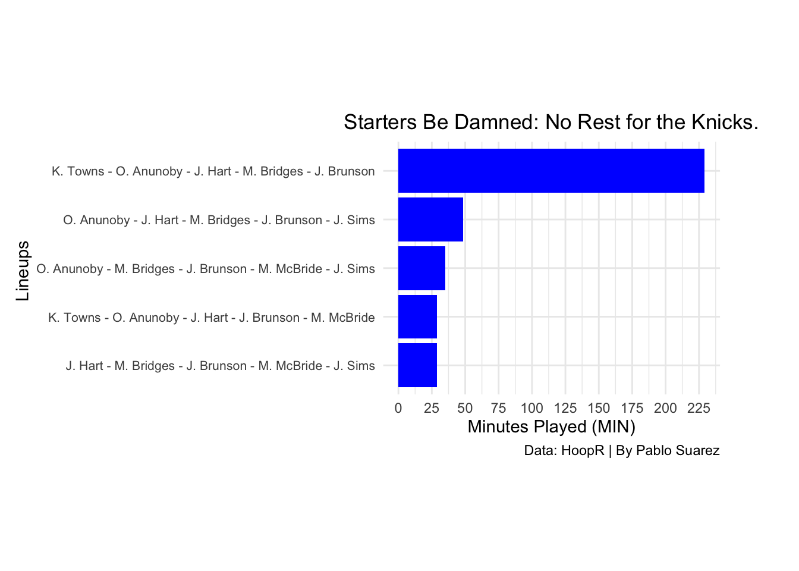

Karl-Anthony Towns and His Impact on the Nova Knicks
Author
Pablo Suarez
Published
November 20, 2024
The Villanova New York Knicks (a.k.a. Nova Knicks) is the dream lineup that never was.
The Knicks essentially swapped two wildcats—Donte DiVincenzo (Villanova) and Julius Randle (Kentucky Wildcats)—for another wildcat (also Kentucky) in Karl Anthony-Towns, who was the prize in a three-team trade that sent him to New York with only 20 days left before opening night.
Now 14 games into the season, the new look Knicks are riding a three-game winning streak into an 8-6 record and sit at fourth place in the Eastern Conference.
As the team finds its footing, Towns’ production is as advertised considering he leads the team in points, rebounds, blocks and shooting percentage, and currently is averaging a double-double with those first two stats. But is his presence leading to winning basketball in the Mecca?
Before we dive into that, let’s take a look at the Knicks’ lineups so far this season.
It’s no secret that Knicks Head Coach Tom Thibodeau keeps a short bench and opts to play his starters deep into games, for better or for worse.
But don’t just take it from me, look at the disparity between his starting five and the next four lineups with the highest total number of minutes played. It’s a roughly 180-minute difference between first and second place.
Code
nyk_top_five_min |>ggplot(aes(x =reorder(GROUP_NAME, MIN), y = MIN)) +geom_bar(stat ="identity", fill ="blue") +coord_flip() +labs(x ="Lineups ",y ="Minutes Played (MIN)",title =str_wrap("Starters Be Damned: No Rest for the Knicks.", width =50),caption ="Data: HoopR | By Pablo Suarez" ) +scale_y_continuous(breaks =seq(0, max(nyk_top_five_min$MIN, na.rm =TRUE), by =25)) +theme_minimal() +theme(axis.text.y =element_text(size =8), plot.title =element_text(hjust =0.5), plot.margin =margin(t =10, r =50, b =10, l =10) ) +theme(aspect.ratio =0.75)

The fifth lineup in that bar chart has played the equivalent of nearly two-and-a-half quarters together on the floor. Out of 42 different lineups that Thibs has rolled out, only 12 of them have played roughly a quarter together or more. Unsurprisingly, the Knicks starters are ranked No. 1 in minutes played together across the league. For context, my beloved Washington Wizards have already trotted out 54 different lineups as they “figure it out.”
That Knicks lineup also ranks No. 1 in field goals attempted and made (but No. 1176 in FG percentage), No. 2 in three-pointers made and attempted (but No. 1133 in percentage), No. 2 in rebounds and No. 1 in assists.
It’s hard to read into the percentage rankings as the list isn’t necessarily adjusted to account for minutes played, so a lineup that’s played less than five minutes and splashed their shots would shoot up the list. Also, volume stats like assists, shots attempted and rebounds are going to skew in favor of this Knicks lineup that’s played roughly 37% of the team’s total minutes so far.
It’s also still early in the season, so it’s slightly difficult to read into exactly how effective each lineup is, but for the sake of it let’s compare some of the most played Knicks lineups (aside from the starting five which we know can produce numbers). The second most-played lineup is essentially the starters without Towns.
O. Anunoby - J. Hart - M. Bridges - J. Brunson - J. Sims
48.44
0.47
0.28
51.00
28.00
O. Anunoby - M. Bridges - J. Brunson - M. McBride - J. Sims
35.17
0.46
0.54
36.00
16.00
K. Towns - O. Anunoby - J. Hart - J. Brunson - M. McBride
28.92
0.53
0.31
28.00
18.00
J. Hart - M. Bridges - J. Brunson - M. McBride - J. Sims
28.85
0.45
0.18
28.00
12.00
This table shows lineups two through five, and a couple things standout. One, it seems like Towns’ presence on the floor helps move the needle in the team’s overall field goal percentage. It’s worth tracking the three-point shooting efficiency of that third lineup throughout the year. It’s only taken 24 threes compared to 40 from lineup two and 148 from the starters, but 54% is still nothing to scoff at after nearly three quarters on the floor together.
It’s also interesting to see that lineup two (although having played 13 more minutes) produces 12 more assists and 15 more rebounds than the next most-played lineup, and doing it all while Towns is on the bench. That lineup is 6-3 when appearing in games. We’ll get a better sense of how that lineup compares to the Towns lineup further into the season.
Historically, and in recent box scores, Towns plays winning basketball. But an almost non-existent preseason with his new team means he might need a slightly longer adjustment period to fully gel with this starting lineup.
However, the extent to which he plays winning basketball to propel the Knicks toward an Eastern Conference championship is to be determined.
One thing is for certain though, he better be ready to play a lot of minutes for Thibs.